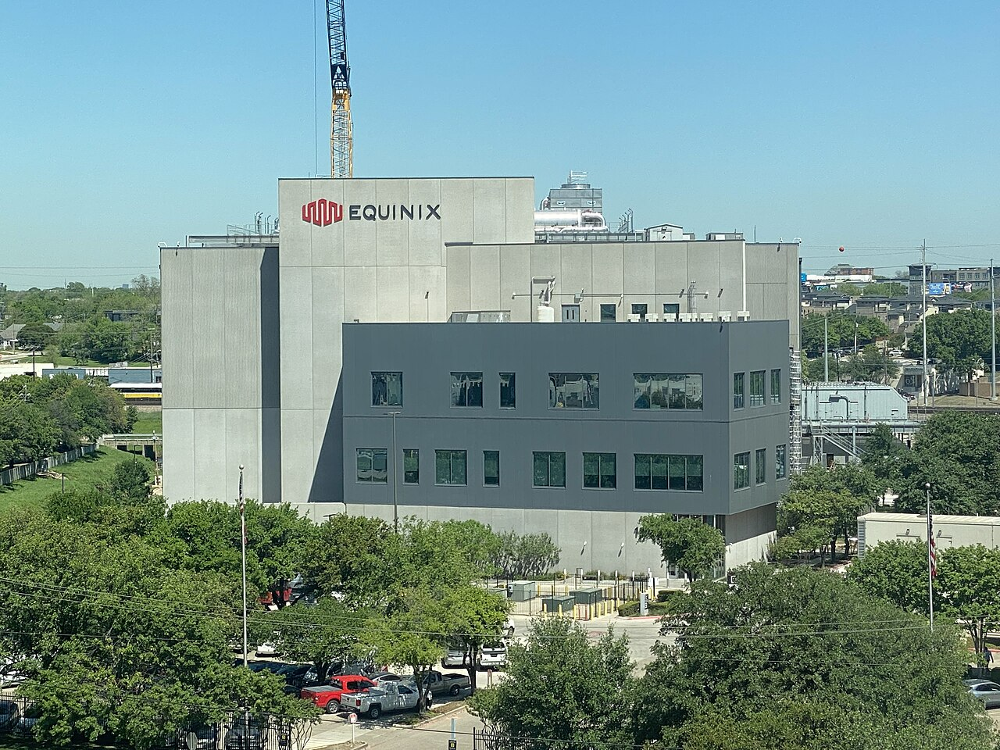

أبرز القطاعات
مشاريع بارزة مع مستخدمين نهائيين عالميين — من سجل مراجعنا الرسمي مع CommScope. مختارات فقط؛ المراجع الكاملة متاحة عند الطلب. جميع العلامات التجارية ملك لأصحابها.
مركز بيانات NVIDIA — تايوان
NVIDIA Data Center, Taiwanيعمل مركز بيانات NVIDIA في تايوان على منصة Propel™ المعيارية من CommScope مع إطارات Propel XFrame™ عالية الكثافة — الحائزة على جائزة المنتج التقني المبتكر لصناعة IDC الصينية 2025 — مغذّاة بوصلات MPO مسبقة الإنهاء وألياف LazrSPEED® OM4 للترقية إلى 400G/800G.
سلسلة المنتجات المستخدمة
بورصة هونغ كونغ — مركز البيانات
Hong Kong Exchanges (HKEX) — Data Centerتتطلب البورصة الرائدة في آسيا تحكماً موثقاً بكل منفذ. ورّدت Excel Unit وصلات MPO وألياف TeraSPEED® OS2 و LazrSPEED® OM4 مع إدارة البنية التحتية الآلية imVision® — رؤية لحظية للمنافذ في واحدة من أكثر البيئات المالية تنظيماً.
سلسلة المنتجات المستخدمة
سلّمنا أيضاً: HSBC · Bank of China · CLSA

Microsoft
مشروع مركز بيانات Microsoft في هونغ كونغ — بنية CommScope للطبقة الفيزيائية بمعايير الحوسبة الضخمة.

Equinix & NTT
مشاريع بمستوى الاستضافة المشتركة لـ Equinix (Packet) و NTT — توصيلات ألياف عالية الكثافة بمجمّعات مسبقة الإنهاء لتجهيز القاعات بسرعة.
جي بي مورغان تشيس
JPMorgan Chaseدورتا تحديث كاملتان عبر طوابق JPMC في هونغ كونغ بمعايير مصرفية: قنوات GigaSPEED X10D® Cat6A إلى كل مكتب على مقابس MGS400، مع صواعد TeraSPEED® OS2 — رُكّبت حول عمليات حيّة ضمن نوافذ تغيير صارمة.
سلسلة المنتجات المستخدمة
سيتاديل
Citadelلواحدة من أكثر شركات التداول تطلباً في العالم، الميكروثانية تساوي مالاً. قنوات GigaSPEED X10D® Cat6A وألياف TeraSPEED® OS2 بمعايير صناديق التحوط — مهندسة وموثقة ومختبرة قناة بقناة.
سلسلة المنتجات المستخدمة
سلّمنا أيضاً: Ernst & Young · BNY Mellon · Natixis · Fidelity
Credit Suisse
كابلات مراكز بيانات بمستوى مصرفي — وصلات MPO مسبقة الإنهاء وألياف TeraSPEED® OS2 مع توثيق كامل لكل منفذ.
State Street
منصة LazrSPEED® OM4 بمجمّعات مسبقة الإنهاء لتجهيز سريع ومنخفض المخاطر.
مطار هونغ كونغ الدولي — نظام المدارج الثلاثة
Hong Kong International Airport — Three-Runway Systemأحد أعظم مشاريع البنية التحتية في آسيا — مدرج ثالث على 650 هكتاراً من الأراضي المستصلحة. ألياف TeraSPEED® مدرّعة ومخصصة للأجواء الخارجية، صُممت لمقاومة الملح والشمس وعصف المحركات، وسُلّمت داخل الحرم الأمني للمطار.
سلسلة المنتجات المستخدمة
سلّمنا أيضاً: مركز بيانات المطار · مشروع ألياف 5G · Hong Kong SkyCity · عقد صيانة المطار
ديزني لاند هونغ كونغ
Hong Kong Disneylandطبقة الكاميرات والمستشعرات لحرم ترفيهي ذكي: كابلات CCTV على Cat6 خارجي عبر المنتجع، إضافة إلى تجديد أجنحة كبار الزوار — بنية تحتية صُممت لتختفي داخل السحر.
سلسلة المنتجات المستخدمة
سلّمنا أيضاً: Starbucks · AXA · DLA Piper · Sands China